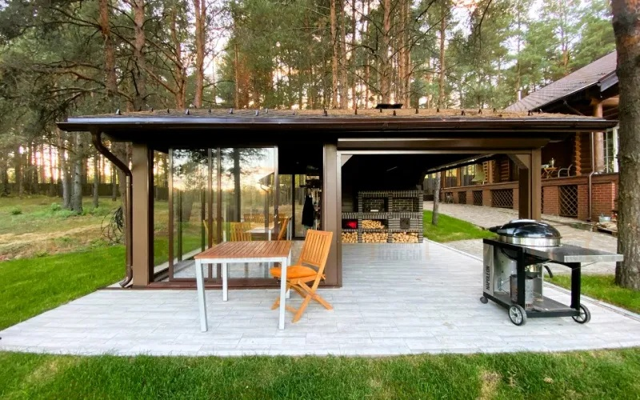

Московские навесы · Москва и область
Навесы, веранды и беседки
Делаем деревянные навесы, веранды и беседки в Москве и области. Обсудим назначение и размеры места установки.
Рассчитать навес
ПРИМЕРЫ РЕШЕНИЙ
Конструкция под участок
Рассмотрите открытые и пристроенные варианты. Подберём размеры, расположение опор и тип кровли для расчёта.
Рассчитать навес